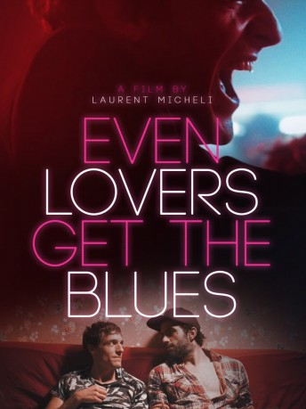

#10144 Even Lovers Get The Blues
 
 IMDB-Wertung: 5.3 / 10
IMDB-Wertung: 5.3 / 10  Metascore: 0
Metascore: 0 
Ana schläft mit Hugo, Dalhia mit Graciano, Léo mit Louis – und Arthur? Mit allen! EVEN LOVERS GET THE BLUES zeichnet ein intimes Bild der Liebesabenteuer von drei befreundeten jungen Paaren, die sich auf einem schmalen Grat zwischen Ernüchterung und hingebungsvoller Leidenschaft bewegen. Zwischen Partys und Liebschaften geht es auch um tiefe Bedürfnisse und die Dringlichkeit, das Leben voll auszukosten.
Jahr: 2016
Dauer: 99 Minuten
FSK: 16
Land: Belgien Studio: Galeries DistributionTonspuren:
Untertitel:
Auflösung: 1080p (1920x808) Größe: 3440 MB
Genre: Drama
Regisseur: Laurent Micheli
Drehbuch: Laurent Micheli
Soundtrack:
Darsteller:
 Pierre Nisse als Aggresseur
Pierre Nisse als Aggresseur Catherine Salée als La vendeuse de sex-shop / The saleswoman at sex-shop
Catherine Salée als La vendeuse de sex-shop / The saleswoman at sex-shop- Marie Denys als Ana
- Gaël Maleux als Hugo
- Adriana Da Fonseca als Dalhia
- Gabriel Da Costa als Graciano
- Séverine Porzio als Léo
- Arnaud Bronsart als Louis
- Tristan Schotte als Arthur
- Juan Bernardo Martinez als Miguel
- Sabrina Assabah als
- Laurent Caron als Le maître-nageur / The lifeguard
- Philippe Grand'Henry als L'homme du lac / The lake man
- Julien Jakout als Julien / Le Bassiste-The Bassist
- Adrien Letartre als Le jeune homme de la soirée / The young man in the evening
- Arieh Worthalter als Le chanteur / The singer
- Thibaut Pira Van Overeem als Figuration / silhouette (uncredited)
Datei: X:\2016(A-F)\Even Lovers Get The Blues (2016, FSK16, 1920x808).mkv seit 11.12.2018
Festplatte: HD 2016(A-Z)
 Es gibt insgesamt 147 Filme in der Gruppe '2016(A-F)'
Es gibt insgesamt 147 Filme in der Gruppe '2016(A-F)'